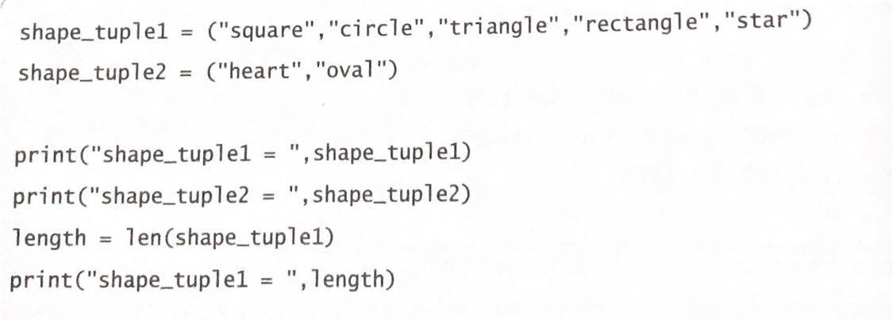
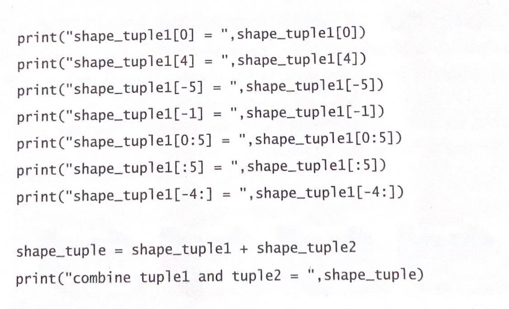
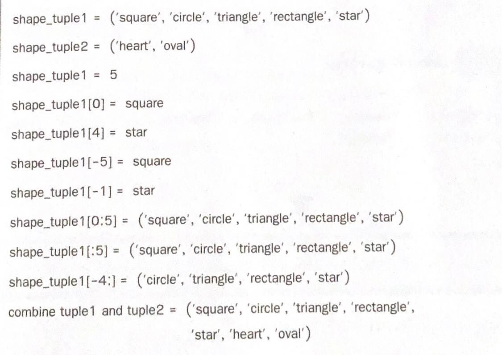

x = [] หรือ x = list() ได้ลิสต์ว่าง ๆ มี len(x) เป็น 0
x = [0]*10 ได้ x = [0,0,0,0,0,0,0,0,0,0]
x = list(a) ได้ลิสต์ที่มีข้อมูลตามที่หยิบออกมาจาก a (ด้วย for e in a)
x = list('abcde') ได้ x = ['a', 'b', 'c', 'd', 'e']
x = list(range(1,10,2)) ได้ x = [1,3,5,7,9]
รายการหรือลิสต์ (list) เป็นที่เก็บกลุ่มของข้อมูลที่มีลำดับ แต่ละตัวมีเลข index กำกับลำดับ ตัวซ้ายสุดมี index 0
การสร้าง List
| x = 2*([1,2,3] + [3,4,5]) ได้ x = [1,2,3,3,4,5,1,2,3,3,4,5] |
| x.append(e) เพิ่ม e ต่อท้าย (ทางขวา) ของลิสต์ x |
| x.insert(i, e) แทรก e ไว้ที่ index i ของลิสต์ x |
| x.pop(i) ลบข้อมูลตัวที่ index i ของลิสต์ x และคืนข้อมูลที่ถูกลบเป็นผลลัพธ |
| x.sort() ทำให้ข้อมูลในลิสต์ x เรียงจากน้อยไปมาก คำสั่งนี้ไม่มีผลคืนกลับมา |
| sorted(x) คืนลิสต์ที่มีค่าเหมือนกับที่แจงออกจาก x แต่เรียงลำดับข้อมูลจากน้อยไปมากให้เรียบร้อย (x ไม่เปลี่ยนแปลง) |
| sum(x) คืนผลรวมของจำนวนในลิสต์ x |
| max(x) คืนค่ามากสุดในลิสต์ x, min(x) คืนค่าน้อยสุดในลิสต์ x |
| x.count(e) คืนจำนวนครั้งที่ e ปรากฏในลิสต์ x |
| if e in x ใช้ตรวจสอบว่ามี e ในลิสต์ x หรือไม่ |
| t.split() คืนลิสต์ของสตริงย่อยที่แยกออกจากสตริง t โดยใช้ช่องว่างเป็นตัวคั่นสตริงย่อย |
| t.split(s) คืนลิสต์ของสตริงย่อยที่แยกออกจากสตริง t โดยใช้สตริง s เป็นตัวคั่นสตริงย่อย |
| s.join(x) คืนสตริงที่ได้จากการนำสตริงในลิสต์ x มาต่อกันคั่นด้วยสตริง s |
ตัวอย่างการเข้าใช้ข้อมูลและลิสต์ย่อยในลิสต์ (สมมติให้ x = [11,12,13,14,15])
• มีวิธีการเข้าใช้และการเลือกลิสต์ย่อยด้วย index เหมือนกับวิธีของสตริง
• ใช้ for e in x : ในการแจกแจงข้อมูลในลิสต์ x จากซ้ายไปขวาออกมาเก็บใน e เพื่อนำไปใช้ในวงวน for ได้
• x[0] เหมือน x[-len(x)] ได้ 11
• x[-1] เหมือน x[len(x)-1] ได้ 15
• อย่าลืมว่า index ของลิสต์ x ต้องอยู่ในช่วง
0 ถึง len(x)-1 จากซ้ายไปขวา
-1 ถึง -len(x) ถอยจากขวามาซ้าย
• x[a:b] (slice ของลิสต์) ได้ลิสต์เสมอ
• เขียน x[a:b] ค่า a กับ b เป็นอะไรก็ได้ ไม่ผิด
x[2:50000] ได้ [13,14,15], x[4999:50000] ได้ []
x[-500:-2] ได้ [11,12,13], x[-3:-500:-1] ได้ [13,12,11], x[-500:-300] ได้ []
• x มีค่าเหมือน x[:] เหมือน x[0:] เหมือน x[:len(s)] เหมือน x[::] เหมือน x[::1]
• x[::2] ได้ลิสต์ย่อยเฉพาะ index คู่ x[1::2] ได้ลิสต์ย่อยเฉพาะ index คี
• x[::-1] เหมือน x[-1::-1] เหมือน x[-1:-(len(x)+1):-1] ได้ [15,14,13,12,11]
Tuple
ข้อมูลในทูเพิล (Tuple) สามารถซ้ำกันได้เช่นเดียวกับลิส แต่เมื่อกำหนดข้อมูลลงในทูเพิลแล้วจะไม่สามารถเปลี่ยนแปลงค่าได้
สร้าง tuple เหมือนสร้าง list แต่ใช้วงเล็บโค้ง
my_list = [1, 2.5, 3, 'A'] ได้ list
my_tuple = (1, 2.5, 3, 'A') ได้ tuple
my_tuple_2 = (1,) ได้ tuple ที่มีตัวเดียว (สังเกตที่ comma)
not_a_tuple = (1) ได้จำนวนเต็ม เหมือน not_a_tuple = 1
t1 = tuple('abc') สร้างจากสตริง ได้('a','b','c')
t2 = tuple([1, 2, 3]) สร้างจากลิสต์ ได้(1,2,3)
my_tuple = (1, 2.5, 3, 'A') ได้ tuple
my_tuple_2 = (1,) ได้ tuple ที่มีตัวเดียว (สังเกตที่ comma)
not_a_tuple = (1) ได้จำนวนเต็ม เหมือน not_a_tuple = 1
t1 = tuple('abc') สร้างจากสตริง ได้('a','b','c')
t2 = tuple([1, 2, 3]) สร้างจากลิสต์ ได้(1,2,3)
การเข้าถึงข้อมูลทำเหมือน list
my_tuple[0] ได้ 1
my_tuple[1:3] ได้ (2.5, 3)
my_tuple[-2:-1] ได้ (3,)
my_tuple[1:3] ได้ (2.5, 3)
my_tuple[-2:-1] ได้ (3,)
เครื่องหมาย + ใช้ต่อ tuple
เครื่องหมาย * ใช้ต่อ tuple หลายครั้ง
a = (2, 3, 5)
b = (7,)
p = a + b ได้(2, 3, 5, 7)
q = p*2 ได้(2, 3, 5, 7, 2, 3, 5, 7)
a += (2,) เหมือนกับเขียน a = a + (2,)
คือนำ a เดิมมาต่อกับ (2,) สร้าง tuple ใหม่
ได้ (2, 3, 5, 2) แล้วให้ค่า tuple นี้กับตัวแปร a
b = (7,)
p = a + b ได้(2, 3, 5, 7)
q = p*2 ได้(2, 3, 5, 7, 2, 3, 5, 7)
a += (2,) เหมือนกับเขียน a = a + (2,)
คือนำ a เดิมมาต่อกับ (2,) สร้าง tuple ใหม่
ได้ (2, 3, 5, 2) แล้วให้ค่า tuple นี้กับตัวแปร a
แก้ข้อมูลใน tuple ไม่ได้ (เหมือนสตริง)
my_tuple[3] = 'B' ผิด
ถ้าต้องการเปลี่ยน ต้องตัดต่อสร้างใหม่
my_tuple = my_tuple[:3] + ('B',) + my_tuple[4:]
ถ้าต้องการเปลี่ยน ต้องตัดต่อสร้างใหม่
my_tuple = my_tuple[:3] + ('B',) + my_tuple[4:]
ระบบจะแปลงสิ่งที่มี comma คั่น ให้กลายเป็น tuple
เช่น t = 1,2,3 เมื่อ print(t) ได้ (1, 2, 3)
a,b,c = (1,2,3) ได้ a = 1, b = 2, c = 3
x,y = 'A','Z' ได้ x = 'A', y = 'Z'
a,x = x,a เป็นการสลับค่าในตัวแปร a กับ x
x,y = 'A','Z' ได้ x = 'A', y = 'Z'
a,x = x,a เป็นการสลับค่าในตัวแปร a กับ x
สามารถสร้าง list ของ tuple ได้
L = [('A','B'), (1,20,300), (9.9,)] เป็น list ของ tuple
L[1] ได้(1,20,300)
L[1][2] ได้300
L[1] ได้(1,20,300)
L[1][2] ได้300
สามารถสร้าง tuple ของ list ได้
T = (['A','B'], [1,20,300], [9.9]) เป็น tuple ของ list
T[1] ได้ [1,20,300]
T[1][2] ได้300
T เป็น tuple จึงเปลี่ยน T[1] = 9 ไม่ได้
แต่เนื่องจาก T[1] เป็นลิสต์ จึงเปลี่ยน T[1][2] = 9 ได้
T[1] ได้ [1,20,300]
T[1][2] ได้300
T เป็น tuple จึงเปลี่ยน T[1] = 9 ไม่ได้
แต่เนื่องจาก T[1] เป็นลิสต์ จึงเปลี่ยน T[1][2] = 9 ได้
สามารถสร้าง tuple ของ tuple ก็ได้
T = ((1,2), (3,4)) เป็น tuple ของ tuple
T[1][0] ได้ 3
T[1][0] ได้ 3
Example

Result
« previous Home Next »